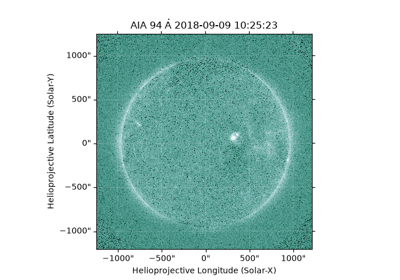

JDHSRPY examples and scripts
This module contains examples for the spectral analysis.
Additionally, here is a [link](https://github.com/KriSun95/jdhsrpy/tree/main/examples/analysis_scripts) to specific observation scripts used.

Downloading SDO Data and Creating Fe18 Proxy
JDHSRPY Analysis
This directory will contain real scripts I’ve used to perform analysis for a given NuSTAR event.
Currently under investigation
2021-Nov-19 to 20
orbit 1 - datetime(2021, 11, 19, 23, 16, 0), datetime(2021, 11, 19, 23, 19, 0) - datetime(2021, 11, 19, 23, 29, 0), datetime(2021, 11, 19, 23, 33, 0)
orbit 2 (obsid: 20619002001) - datetime(2021, 11, 20, 0, 51, 0), datetime(2021, 11, 20, 1, 3, 0)
Analysis underway
orbit 3 (obsid: 20619003001) - datetime(2021, 11, 20, 2, 5, 0), datetime(2021, 11, 20, 2, 9, 30) - datetime(2021, 11, 20, 2, 46, 30), datetime(2021, 11, 20, 2, 50, 0) - datetime(2021, 11, 20, 2, 28, 30), datetime(2021, 11, 20, 2, 32, 0)
Analysis underway
datetime(2021, 11, 20, 2, 41, 30), datetime(2021, 11, 20, 2, 44, 30)
2021-Nov-21 to 22
orbit 1 - datetime(2021, 11, 21, 23, 48, 0), datetime(2021, 11, 21, 23, 52, 20)
orbit 2 - datetime(2021, 11, 22, 1, 18, 0), datetime(2021, 11, 22, 1, 20, 0)